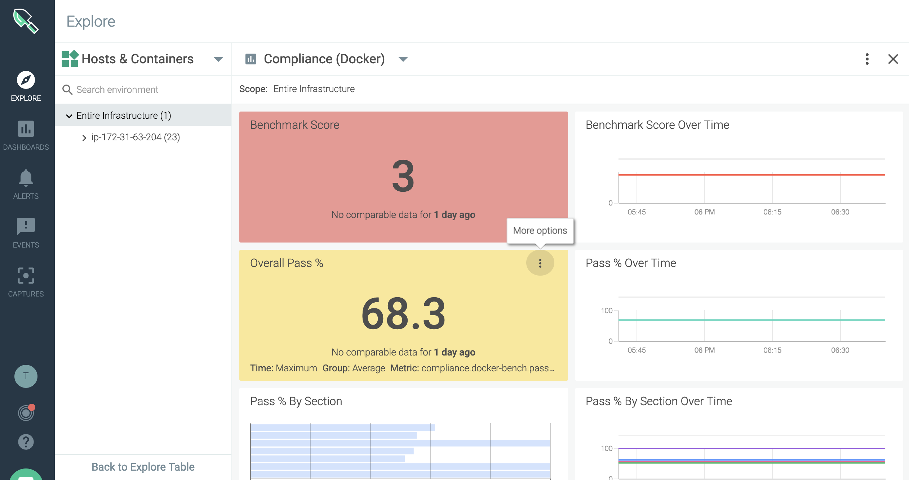

Compliance
The Center for Internet Security (CIS) issues standardized benchmarks, guidelines, and best practices for securing IT systems and environment.
Use the Compliance module of Sysdig Secure to run Kubernetes and Docker CIS benchmarks against your environment.
How Sysdig Compliance Tests Work
CIS benchmarks are best practices for the secure configuration of a target system. Sysdig has implemented these standardized benchmark controls for different versions of Kubernetes and Docker. You run benchmark tests using the provided tools.
Setting up a task
Using a Compliance Task, configure the type of test, the environment scope, and the scheduled frequency of the compliance check. You can also filter how you'd like to view the Results report. See also Understanding Report Filters.
Running a test
Once a compliance task is configured, Sysdig Secure will:
Kick off a check in the agent that runs the compliance task to analyze your system configuration against CIS best-practices
Store the results of this task
Reviewing report results
When a task has been run, it is listed in the Results page and can be viewed as a Report.
 |
Reviewing compliance metrics
Consolidated Compliance metrics can also be viewed in Sysdig Monitor, from default or customized Compliance Dashboards.
|  |
Understanding Report Filters
Customize your view of the test report, e.g. to see only high-priority results or the results from selected controls. (The entire test suite will still be run; just the report contents will be filtered.)
Setting up a Report filter is simple. Under Report on the Compliance Task page:
Choose
Custom SelectionChoose a
benchmark versionandapply a
Profilefilter, and/orselect/deselect individual controls.
 |
Use the information in this section to understand the effect of your selections.
About Custom Selections
Filtering rules apply to the report, not the test itself.
Filtering Rules
Filtering the Report view does not change the scope of the test run.
The full compliance benchmark will be run, but the result view will be edited.
If you apply a filter to an existing task which has already been run, the filter view will be retroactively applied to the historical reports.
If you deselect the filter, the full results will again be visible.
About Benchmark Versions
CIS issues benchmark versions that correspond to – but are not identical with -- the Kubernetes or Docker software version. See the mapping tables, below.
Version Rules
If you do not customize/filter your report, the Sysdig agent will auto-detect your environment version and will run the corresponding version of the benchmark controls.
If you specify a benchmark version, you can then apply a report filter.
If the test version doesn't match the environment version, the filter will be ignored and all the tests will be displayed.
Kubernetes Version Mapping
CIS Benchmark Version | Kubernetes Version | Sysdig Report Filter UI | |
|---|---|---|---|
Kubernetes 1.0 | Kubernetes v 1.6 |
| |
Kubernetes 1.1 | Kubernetes v 1.7 | ||
Kubernetes 1.2 | Kubernetes v 1.8 | ||
Kubernetes 1.3 | Kubernetes v 1.1 |
Sysdig also supports Kubernetes benchmark tests for the following distributions:
EKS: Amazon Elastic Container Service for Kubernetes, default cluster version
GKE: Google Kubernetes Engine (GKE), default cluster version
IKS: IBM Kubernetes Service
OpenShift versions 3.10, 3.11
Rancher
Docker Version Mapping
CIS Benchmark Version | Sysdig Report Filter |
|---|---|
CIS_Docker_Community_Edition_Benchmark_v1.1.0 | Docker 1.0 |
About Profile Levels
CIS defines two levels of tests, as described below.
In Sysdig Secure, full benchmarks are always run, but you can filter your view of the report to see only top-priority (Level 1 Profile) or only the secondary (Level 2 Priority) results.
From the CIS FAQ:
Level 1 Profile: Limited to major issues
Considered a base recommendation that can be implemented fairly promptly and is designed to not have an extensive performance impact. The intent of the Level 1 profile benchmark is to lower the attack surface of your organization while keeping machines usable and not hindering business functionality.
Level 2 Profile: Extensive checks, more complete
Considered to be "defense in depth" and is intended for environments where security is paramount. The recommendations associated with the Level 2 profile can have an adverse effect on your organization if not implemented appropriately or without due care.
Note
In the Sysdig Secure interface, select
Allto view an in-depth report that includes both Level 1 and Level 2 controls.Select
Level 1to view a report that includes only high-priority controls.Select
Level 2to view a report that includes only the lower-priority controls that are excluded from Level 1.See also: Configure Compliance Tasks.